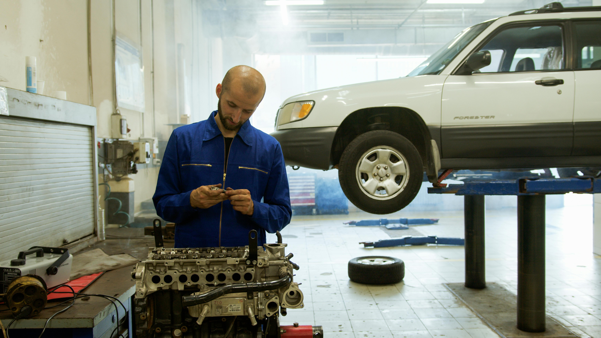
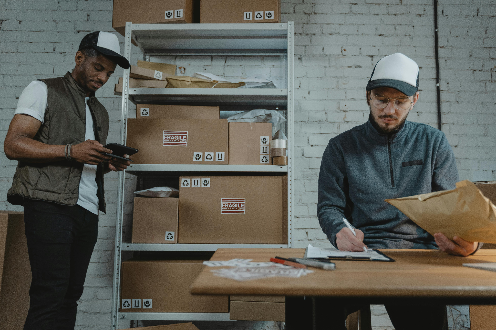
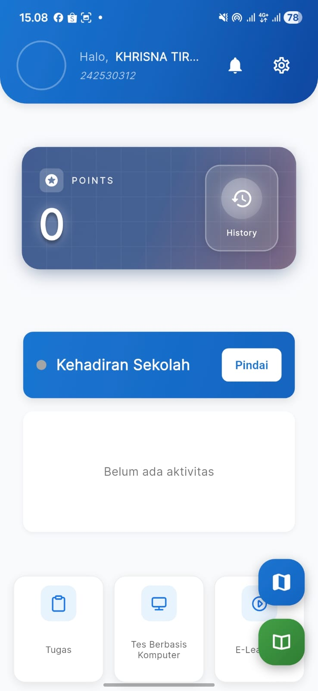

Kami menyediakan 5 program kejuruan yang dapat di pilih oleh calon peserta didik sesuai dengan minat
Explore ProgramsBergabunglah dengan program kejuruan kami yang dirancang untuk mempersiapkan Anda menghadapi dunia kerja di KIIC.

Mempelajari cara pengoperasian mesin CNC, Bubut, dan menguasai teknik pengelasan.

Mempelajari cara perawatan dan perbaikan kendaraan bermotor serta sistem elektriknya.

Mempelajari cara instalasi, konfigurasi, dan perawatan sistem komputer serta jaringan.

Mempelajari cara instalasi, konfigurasi, dan perawatan sistem elektronika industri.

Mempelajari manajemen pergudangan dan bisnis logistik.
Kami mendukung penuh program PKL dan Magang Peserta didik kami untuk mendapatkan pengalaman kerja nyata di industri. Melalui kemitraan dengan perusahaan-perusahaan terkemuka di KIIC.
Penempatan di Kawasan KIIC
Membuka kesempatan untuk magang dan mengikuti pelatihan yang di sediakan oleh industri.


Kami membuka kesempatan bagi peserta didik kami yang ingin bekerja dan melanjutkan perguruan tinggi di luar negeri seperti German, Jepang, dan Turki.
